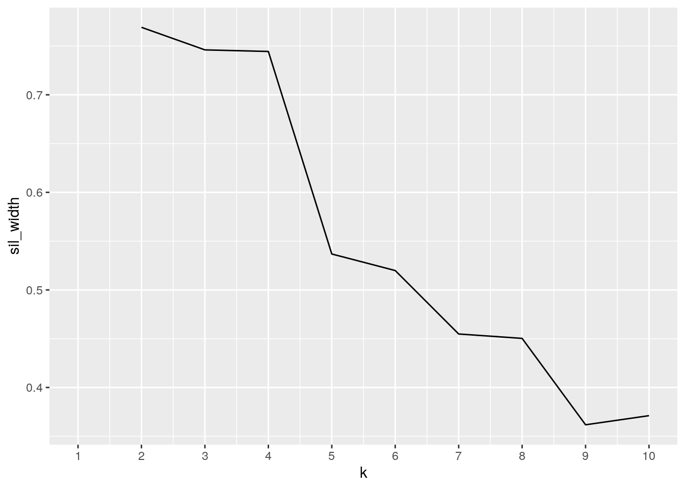

For this project I have created two datasets. The first dataset is called txstatistics, from the CDC website I chose 50 random texas cities and documented their 2019 population (population variable), the percent of persons with a bachelors degree or higher (percent_bach variable), and the average household income for 2019 (avg_income variable). The second dataset is called txhomevalues; from Zillow.com I downloaded an Excel sheet of the average home values per month in 2019 and 2020 for every Texas city and then removed any city that wasn’t one of the 50 I chose in the first dataset. I chose the first dataset because it was my Biostats project and I chose the Zillow real estate dataset because I too hope to buy a home in Texas someday. From these two datasets I expect a strong association between the average home value and average household income because people who make more can afford more expensive homes. I also expect a strong association between percent of persons with a bachelors degree and average income because that is the relationship I found in my Biostats project.
library(tidyverse)
txstatistics <- read.csv("~/Project/txstatistics.csv")
txhomevalues <- read.csv("~/Project/txhomevalues.csv")
# 1. Tidy Data
txstatistics %>% pivot_wider(names_from = city, values_from = avg_income) %>%
pivot_longer(1:50, names_to = "city", values_to = "avg_income")## # A tibble: 2,500 x 4
## Waco `Wichita Falls` city avg_income
## <int> <int> <chr> <dbl>
## 1 NA NA population 123420
## 2 NA NA percent_bach 23.5
## 3 NA NA Abilene 50659
## 4 NA NA Amarillo NA
## 5 NA NA Arlington NA
## 6 NA NA Austin NA
## 7 NA NA Beaumont NA
## 8 NA NA Bellaire NA
## 9 NA NA Bellmead NA
## 10 NA NA Big Spring NA
## # … with 2,490 more rowstxhomevalues %>% pivot_longer(contains("."), names_to = "Date",
values_to = "home_value") %>% separate(Date, into = c("month",
"year"))## # A tibble: 1,200 x 5
## city State month year home_value
## <fct> <fct> <chr> <chr> <int>
## 1 Abilene TX Jan 2019 134088
## 2 Abilene TX Feb 2019 134271
## 3 Abilene TX Mar 2019 134473
## 4 Abilene TX Apr 2019 134844
## 5 Abilene TX May 2019 135201
## 6 Abilene TX Jun 2019 135388
## 7 Abilene TX Jul 2019 135521
## 8 Abilene TX Aug 2019 136207
## 9 Abilene TX Sep 2019 136927
## 10 Abilene TX Oct 2019 137398
## # … with 1,190 more rowstxhome_tidy <- txhomevalues %>% pivot_longer(contains("."), names_to = "Date",
values_to = "home_value") %>% separate(Date, into = c("month",
"year"))The txstatistics dataset did not need to be tidy. The txhomevalues dataset did need to be tidy because month and year were combined as one variable and the average home value wasn’t it’s own variable. So I pivoted longer taking the names Month.Year to a column called date and the values to it’s own column called home_value. Then I had to separate the months and the year because they were both within the new “Date” variable I created. So I used the separate function to separate the Month.Year by the period, which is the default R setting, into two new columns called “month” and “year.”
inner_join(txhome_tidy, txstatistics)## # A tibble: 1,200 x 8
## city State month year home_value avg_income population percent_bach
## <fct> <fct> <chr> <chr> <int> <int> <int> <dbl>
## 1 Abilene TX Jan 2019 134088 50659 123420 23.5
## 2 Abilene TX Feb 2019 134271 50659 123420 23.5
## 3 Abilene TX Mar 2019 134473 50659 123420 23.5
## 4 Abilene TX Apr 2019 134844 50659 123420 23.5
## 5 Abilene TX May 2019 135201 50659 123420 23.5
## 6 Abilene TX Jun 2019 135388 50659 123420 23.5
## 7 Abilene TX Jul 2019 135521 50659 123420 23.5
## 8 Abilene TX Aug 2019 136207 50659 123420 23.5
## 9 Abilene TX Sep 2019 136927 50659 123420 23.5
## 10 Abilene TX Oct 2019 137398 50659 123420 23.5
## # … with 1,190 more rowstxstatistics %>% summarize(n_distinct(city))## n_distinct(city)
## 1 50tx_join <- inner_join(txhome_tidy, txstatistics)There were 1200 observations in the txhome_tidy data set and 50 observations in the txstatistics dataset. I did an inner join with the two datasets because I only want to see the cities that are in both data sets. After summarizing all distinct cities it appears that all 50 cities in the txstatistics dataset were in the txhome_tidy dataset so no observations were dropped.
tx_join %>% group_by(city) %>% select(home_value, avg_income) %>%
filter(avg_income > 61745.92 & home_value > 213121.5) %>%
summarize_all(max) %>% arrange(desc(avg_income))## # A tibble: 9 x 3
## city home_value avg_income
## <fct> <int> <int>
## 1 University Park 1500953 224485
## 2 Bellaire 908477 206734
## 3 Terrell Hills 721054 181979
## 4 Friendswood 333867 111478
## 5 Cedar Park 393495 104019
## 6 Midland 273306 79329
## 7 Austin 469568 71576
## 8 Irving 254721 64868
## 9 Fort Worth 226118 62187tx_join %>% group_by(month) %>% summarize(min(home_value))## # A tibble: 12 x 2
## month `min(home_value)`
## <chr> <int>
## 1 Apr 56820
## 2 Aug 57764
## 3 Dec 60457
## 4 Feb 56059
## 5 Jan 55818
## 6 Jul 57859
## 7 Jun 57821
## 8 Mar 56438
## 9 May 57367
## 10 Nov 59141
## 11 Oct 58150
## 12 Sep 57553tx_join %>% group_by(city) %>% mutate(avg_home_value = mean(home_value)) %>%
arrange(desc(avg_home_value))## # A tibble: 1,200 x 9
## # Groups: city [50]
## city State month year home_value avg_income population percent_bach
## <fct> <fct> <chr> <chr> <int> <int> <int> <dbl>
## 1 Univ… TX Jan 2019 1429200 224485 24985 87.8
## 2 Univ… TX Feb 2019 1430456 224485 24985 87.8
## 3 Univ… TX Mar 2019 1430815 224485 24985 87.8
## 4 Univ… TX Apr 2019 1431177 224485 24985 87.8
## 5 Univ… TX May 2019 1431156 224485 24985 87.8
## 6 Univ… TX Jun 2019 1431910 224485 24985 87.8
## 7 Univ… TX Jul 2019 1432619 224485 24985 87.8
## 8 Univ… TX Aug 2019 1434119 224485 24985 87.8
## 9 Univ… TX Sep 2019 1437813 224485 24985 87.8
## 10 Univ… TX Oct 2019 1431290 224485 24985 87.8
## # … with 1,190 more rows, and 1 more variable: avg_home_value <dbl># Summary Statistics using group_by
tx_join %>% group_by(city) %>% select(home_value) %>% summarize(n())## # A tibble: 50 x 2
## city `n()`
## <fct> <int>
## 1 Abilene 24
## 2 Amarillo 24
## 3 Arlington 24
## 4 Austin 24
## 5 Beaumont 24
## 6 Bellaire 24
## 7 Bellmead 24
## 8 Big Spring 24
## 9 Brady 24
## 10 Brownsville 24
## # … with 40 more rowstx_join %>% group_by(year) %>% select(avg_income) %>% summarize(n())## # A tibble: 2 x 2
## year `n()`
## <chr> <int>
## 1 2019 600
## 2 2020 600tx_join %>% group_by(city) %>% select(population) %>% summarize(n())## # A tibble: 50 x 2
## city `n()`
## <fct> <int>
## 1 Abilene 24
## 2 Amarillo 24
## 3 Arlington 24
## 4 Austin 24
## 5 Beaumont 24
## 6 Bellaire 24
## 7 Bellmead 24
## 8 Big Spring 24
## 9 Brady 24
## 10 Brownsville 24
## # … with 40 more rowstx_join %>% group_by(year) %>% select(percent_bach) %>% summarize(n())## # A tibble: 2 x 2
## year `n()`
## <chr> <int>
## 1 2019 600
## 2 2020 600tx_join %>% group_by(year, city) %>% summarize_all(mean)## # A tibble: 100 x 8
## # Groups: year [2]
## year city State month home_value avg_income population percent_bach
## <chr> <fct> <dbl> <dbl> <dbl> <dbl> <dbl> <dbl>
## 1 2019 Abilene NA NA 135623. 50659 123420 23.5
## 2 2019 Amarillo NA NA 137111. 52725 199371 23.7
## 3 2019 Arlington NA NA 213750. 60571 398854 30.3
## 4 2019 Austin NA NA 404084. 71576 978908 51.7
## 5 2019 Beaumont NA NA 112979. 50632 116825 24.5
## 6 2019 Bellaire NA NA 898136. 206734 18971 79.6
## 7 2019 Bellmead NA NA 81185. 41696 10744 12.2
## 8 2019 Big Spring NA NA 119864. 52275 28187 11.5
## 9 2019 Brady NA NA 105968. 44951 5302 12.3
## 10 2019 Brownsville NA NA 100067. 38588 182781 18.9
## # … with 90 more rowstx_join %>% group_by(year) %>% select_if(is.numeric) %>% summarize_all(sd)## # A tibble: 2 x 5
## year home_value avg_income population percent_bach
## <chr> <dbl> <dbl> <dbl> <dbl>
## 1 2019 226829. 39221. 443837. 16.7
## 2 2020 227888. 39221. 443837. 16.7tx_join %>% group_by(year) %>% select_if(is.numeric) %>% summarize_all(var)## # A tibble: 2 x 5
## year home_value avg_income population percent_bach
## <chr> <dbl> <dbl> <dbl> <dbl>
## 1 2019 51451610892. 1538300986. 196991232561. 281.
## 2 2020 51932817505. 1538300986. 196991232561. 281.tx_join %>% group_by(year) %>% select_if(is.numeric) %>% summarize_all(quantile)## # A tibble: 10 x 5
## # Groups: year [2]
## year home_value avg_income population percent_bach
## <chr> <dbl> <dbl> <dbl> <dbl>
## 1 2019 55818 32544 5302 10.9
## 2 2019 109394. 44951 18971 17.4
## 3 2019 140764. 51294. 65969 23.8
## 4 2019 213614. 60582 199371 30.3
## 5 2019 1437813 224485 2320268 87.8
## 6 2020 61229 32544 5302 10.9
## 7 2020 115250. 44951 18971 17.4
## 8 2020 149050 51294. 65969 23.8
## 9 2020 226212. 60582 199371 30.3
## 10 2020 1500953 224485 2320268 87.8tx_join %>% group_by(year) %>% select_if(is.numeric) %>% summarize_all(min)## # A tibble: 2 x 5
## year home_value avg_income population percent_bach
## <chr> <int> <int> <int> <dbl>
## 1 2019 55818 32544 5302 10.9
## 2 2020 61229 32544 5302 10.9tx_join %>% group_by(year) %>% select_if(is.numeric) %>% summarize_all(max)## # A tibble: 2 x 5
## year home_value avg_income population percent_bach
## <chr> <int> <int> <int> <dbl>
## 1 2019 1437813 224485 2320268 87.8
## 2 2020 1500953 224485 2320268 87.8tx_join %>% group_by(year) %>% select_if(is.numeric) %>% summarize_all(n_distinct)## # A tibble: 2 x 5
## year home_value avg_income population percent_bach
## <chr> <int> <int> <int> <int>
## 1 2019 597 50 50 47
## 2 2020 600 50 50 47tx_join %>% group_by(year) %>% summarize(cor(home_value, avg_income))## # A tibble: 2 x 2
## year `cor(home_value, avg_income)`
## <chr> <dbl>
## 1 2019 0.939
## 2 2020 0.935tx_join %>% group_by(year) %>% summarize(cor(population, percent_bach))## # A tibble: 2 x 2
## year `cor(population, percent_bach)`
## <chr> <dbl>
## 1 2019 0.106
## 2 2020 0.106# Overall Statistics
tx_join %>% select(home_value) %>% summarize(n())## # A tibble: 1 x 1
## `n()`
## <int>
## 1 1200tx_join %>% select(avg_income) %>% summarize(n())## # A tibble: 1 x 1
## `n()`
## <int>
## 1 1200tx_join %>% select(population) %>% summarize(n())## # A tibble: 1 x 1
## `n()`
## <int>
## 1 1200tx_join %>% select(percent_bach) %>% summarize(n())## # A tibble: 1 x 1
## `n()`
## <int>
## 1 1200tx_join %>% summarize_all(mean)## # A tibble: 1 x 8
## city State month year home_value avg_income population percent_bach
## <dbl> <dbl> <dbl> <dbl> <dbl> <dbl> <dbl> <dbl>
## 1 NA NA NA NA 213121. 61746. 235029. 27.5tx_join %>% select_if(is.numeric) %>% summarize_all(sd)## # A tibble: 1 x 4
## home_value avg_income population percent_bach
## <dbl> <dbl> <dbl> <dbl>
## 1 227296. 39205. 443652. 16.7tx_join %>% select_if(is.numeric) %>% summarize_all(var)## # A tibble: 1 x 4
## home_value avg_income population percent_bach
## <dbl> <dbl> <dbl> <dbl>
## 1 51663690198. 1537018000. 196826936287. 280.tx_join %>% select_if(is.numeric) %>% summarize_all(quantile)## # A tibble: 5 x 4
## home_value avg_income population percent_bach
## <dbl> <dbl> <dbl> <dbl>
## 1 55818 32544 5302 10.9
## 2 111885. 44951 18971 17.4
## 3 145912. 51294. 65969 23.8
## 4 221354. 60582 199371 30.3
## 5 1500953 224485 2320268 87.8tx_join %>% select_if(is.numeric) %>% summarize_all(min)## # A tibble: 1 x 4
## home_value avg_income population percent_bach
## <int> <int> <int> <dbl>
## 1 55818 32544 5302 10.9tx_join %>% select_if(is.numeric) %>% summarize_all(max)## # A tibble: 1 x 4
## home_value avg_income population percent_bach
## <int> <int> <int> <dbl>
## 1 1500953 224485 2320268 87.8tx_join %>% select_if(is.numeric) %>% summarize_all(n_distinct)## # A tibble: 1 x 4
## home_value avg_income population percent_bach
## <int> <int> <int> <int>
## 1 1195 50 50 47tx_join %>% summarize(cor(home_value, avg_income))## # A tibble: 1 x 1
## `cor(home_value, avg_income)`
## <dbl>
## 1 0.937tx_join %>% summarize(cor(population, percent_bach))## # A tibble: 1 x 1
## `cor(population, percent_bach)`
## <dbl>
## 1 0.106The first thing I did to explore my dataset is find the city with the highest average income that is above the overall average income of all the cities and above the overall average home value of all the cities. That city was University Park, TX. Also I discovered that the month with the lowest average home value across all cities and both years is January which makes sense because most people don’t sell/buy houses at the very beginning of the year. Finally I created a new variable that averaged all of the average home values by city. No surprise University Park has the highest home value averaged across every month of both years. After exploring my data I made summary statistics for each numeric variable, average home value, average income, population, and percent of persons with a bachelors degree. I did this overall and after grouping by one or two categorical variables. There is a lot of deviation from the mean for each of the variables. Also as expected the minimum income has a low percent of persons with a bachelors degree and the maximum income has a relatively high percent of persons with a bachelors degree. It is no surprise then that home value and average income have a high correlation. Population and percent of persons with a bachelors degree has a relatively low correlation which is interesting, it’s hard to say whether large cities should have high percent bachelors because they generally have universities and small towns usually lack access to quality education or if large cities would have less bachelors degrees due to steep costs of living.
tx_cor <- tx_join %>% select_if(is.numeric) %>% cor()
tx_cor %>% as.data.frame %>% rownames_to_column("var1") %>% pivot_longer(-1,
names_to = "var2", values_to = "correlation") %>% ggplot(aes(var1,
var2, fill = correlation)) + geom_tile() + geom_text(aes(label = round(correlation,
2)), color = "white", size = 4) + coord_fixed() + ggtitle("Correlation Heatmap for Data on Cities in Texas") +
ylab("Variables 2") + xlab("Variables 1")The correlation heat map shows that there is a very strong correlation between percentage of people with a bachelors degre and average income for a particular city (0.9). Also there is a strong correlation between percentage of people with a bachelors degree and the average home value for a particular city (0.9). The last strong correlation is between the average income per year and the average home value for a particular city (0.94). There is almost no correlation between population and average income per year (-0.08). Finally, there is 0 correlation between population and average home value.
tx_join %>% group_by(city) %>% mutate(avg_home_value = mean(home_value)) %>%
ggplot(aes(avg_income, avg_home_value)) + geom_point(aes(color = population),
size = 2) + scale_color_gradient(low = "white", high = "blue") +
geom_smooth(method = "lm") + ggtitle("Average Home Value vs. Avgerage Income in Texas Cities") +
ylab("Avgerage Home Value ($)") + xlab("Average Income per Year ($)")The graph above creates a clear visual representation of the strong correlation between average income per year and average home value in texas cities. Additionally, it is clear that there is little to no relationship between population and our x and y variables because small population are seen at low income/home value and high income/home value. It appears that large populations are at the lower end and that could be because large cities typically contain a large amount of homelessness, high cost of living, job scarcity, etc.
tx_join %>% mutate(avg_income_grouped = case_when(avg_income <
60000 ~ "Low", avg_income > 1e+05 ~ "High", avg_income <=
1e+05 & 600 <= avg_income ~ "Med")) %>% mutate(avg_bach = case_when(percent_bach <
27.468 ~ "Below Average", percent_bach > 27.468 ~ "Above Average")) %>%
filter(!duplicated(avg_income)) %>% ggplot(aes(avg_income_grouped,
fill = avg_bach)) + geom_bar(aes(y = home_value), position = "dodge",
stat = "summary") + ggtitle("Avgerage Income and Percent Bachelors Degrees in Texas Cities") +
ylab("Average Home Value ($)") + xlab("Average Income per Year ($)") +
scale_fill_brewer("Percent Bachelors", palette = 8)The graph above shows the relationship between average home value, average income per year, and percent of persons with a bachelors degree or higher. For the cities with high average incomes they only contained above the average percent of person with a bachelors degree. Surprisingly there were more cities in the low income group with above average bachelors degrees but these cities did have the lowest home values as expected. This is the relationship we would expect based on our correlation heatmap and knowing that people with a college degree tend to make more than those with no degree so they can afford more expensive homes.
library(cluster)
tx_numeric <- tx_join %>% select_if(is.numeric) %>% filter(!duplicated(avg_income))
sil_width <- vector()
for (i in 2:10) {
kms <- kmeans(tx_numeric, centers = i)
sil <- silhouette(kms$cluster, dist(tx_numeric))
sil_width[i] <- mean(sil[, 3])
}
ggplot() + geom_line(aes(x = 1:10, y = sil_width)) + scale_x_continuous(name = "k",
breaks = 1:10)
pam_tx <- tx_join %>% select_if(is.numeric) %>% filter(!duplicated(avg_income)) %>%
scale %>% pam(k = 2)
pam_tx## Medoids:
## ID home_value avg_income population percent_bach
## [1,] 1 -0.3135435 -0.2800693 -0.2491445 -0.2347153
## [2,] 6 3.0615485 3.6625781 -0.4823056 3.0837138
## Clustering vector:
## [1] 1 1 1 1 1 2 1 1 1 1 1 1 1 1 1 1 1 1 1 1 1 1 1 1 1 1 1 1 1 1 1 1 1 1 1 1 1 1
## [39] 1 1 1 1 1 2 1 1 2 1 1 1
## Objective function:
## build swap
## 0.9240844 0.9240844
##
## Available components:
## [1] "medoids" "id.med" "clustering" "objective" "isolation"
## [6] "clusinfo" "silinfo" "diss" "call" "data"plot(pam_tx, which = 2)final_tx <- tx_numeric %>% mutate(cluster = pam_tx$clustering)
final_tx## # A tibble: 50 x 5
## home_value avg_income population percent_bach cluster
## <int> <int> <int> <dbl> <int>
## 1 134088 50659 123420 23.5 1
## 2 135485 52725 199371 23.7 1
## 3 209390 60571 398854 30.3 1
## 4 394776 71576 978908 51.7 1
## 5 111531 50632 116825 24.5 1
## 6 907836 206734 18971 79.6 2
## 7 76395 41696 10744 12.2 1
## 8 115536 52275 28187 11.5 1
## 9 103087 44951 5302 12.3 1
## 10 98227 38588 182781 18.9 1
## # … with 40 more rowslibrary(plotly)
final_tx %>% plot_ly(x = ~home_value, y = ~avg_income, z = ~percent_bach,
color = ~cluster, type = "scatter3d", mode = "markers")The first step in my code selects only the numeric variables and then removes any duplicate avg_income so I only have one row for each city. The next step I conducted a silhouette width analysis to decide how many clusters I should have based on maximizing the cohesion within a cluster and separation between the clusters. The silhouette analysis shows I should have 2 clusters giving an average silhouette width of 0.77 which is strong. Then I scales my variables and created my PAM clusters to ignore any outliers. Then I mutated my data to add the clusters as a variables. Then I visualized my clusters with a 3-D plot shoiwing average income, home values, and percent of persons with a bachelors degree. As you can see the two clusters show that low average income, low home value, and low percent bachelors are one cluster and high average income, high home value, and high percent bachelors is the other cluster.
## paste this chunk into the ```{r setup} chunk at the top of
## your project 1 .Rmd file
knitr::opts_chunk$set(echo = TRUE, eval = TRUE, fig.align = "center",
warning = F, message = F, tidy = TRUE, tidy.opts = list(width.cutoff = 60),
R.options = list(max.print = 100))…